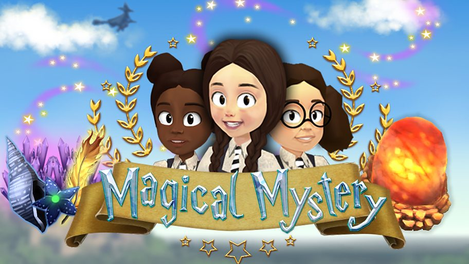

The Worst Witch Magical Mystery is a story-driven adventure game for children aged 6+. It is based on the CBBC series The Worst Witch. Players create their own character, brew potions, cast spells and complete quests to uncover who stole the founding stone.
I worked on Chapter 1, designing and implementing an intuitive and enjoyable level using assets produced by the project's artist. I integrated the game's dialogue using ink, structuring it to support non-linear quests. I also programmed and designed several quests including puzzles and collectables.
